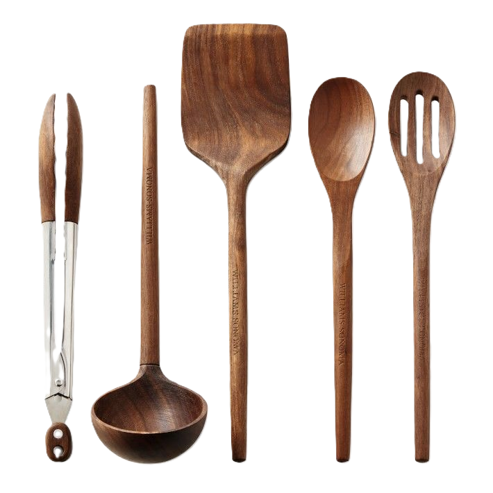

Classic Lasagna
Layers of pasta, rich meat sauce, and melted cheese - the ultimate comfort food.
View RecipeKitchen-Tested Classics Made Simple

Layers of pasta, rich meat sauce, and melted cheese - the ultimate comfort food.
View Recipe
Keep your knives sharp - a dull knife is more dangerous than a sharp one.
Let meat rest after cooking to allow juices to redistribute.
Season in layers - a little salt at different stages builds flavor.